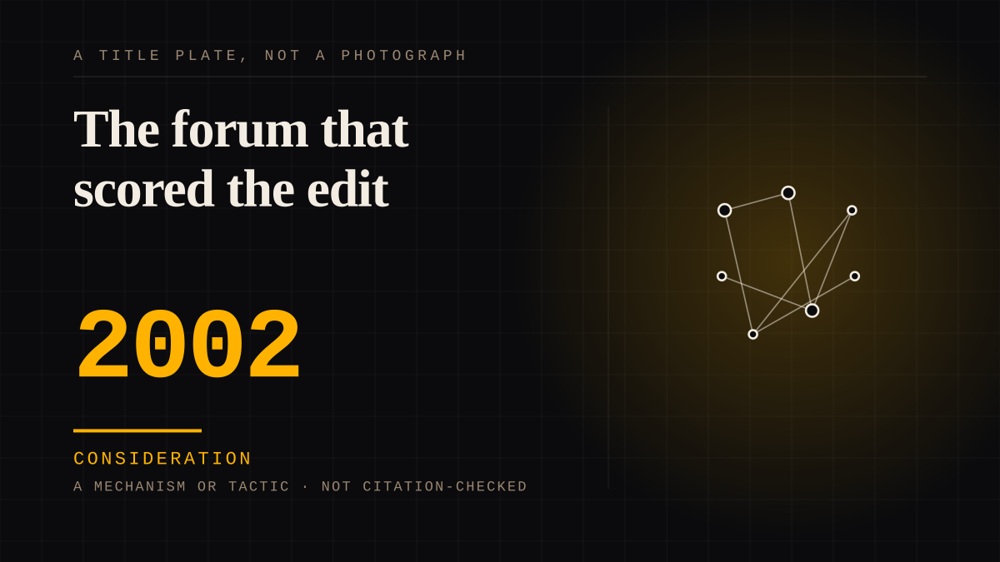

A mechanism or tactic · 2002 · Reality television
The forum that scored the edit
Edgic - editing plus logic - is the practice of grading every contestant's screen presence week by week: a category (invisible, under the radar, middle of the road, complex personality, over the top), a tone and a visibility score, charted in public so a community can read what the production is doing and name the winner before the merge. It began on the Survivor Sucks forum during Survivor's fourth season in 2002.

The instrument was written by forum users, in season four, and it has never been official. Inside Survivor's glossary records the portmanteau - edit plus logic - as coined by members of the Survivor Sucks forum, and its introduction page describes the practice: a fan decided to apply media theory and statistical analysis to his favourite show to work out who the winner was from the editing, assigning each player a rating every episode from their portrayal, their share of screen time and other factors. The Ringer's history fixes the origin: Survivor Sucks, during season four, in 2002, credited to a user called KernelQ, remembered by one of the community's organisers as part man and part myth, and by season nine many of its permanent principles and methods were in place. The board's own archive shows the machinery running: a 2005 thread lays out the guidelines - invisible, under the radar, middle of the road, complex personality, over the top, each with a tone and a visibility from one to five - a rating schedule with dates, and a roster of raters that includes KernelQ himself.
What makes it this site's subject is that the grade is written for somebody who will never read it, and the group that keeps it has a constitution. Each week the community scores a real person's edited presence - not the programme but an individual's portrayal - and the work is collective and kept: the successor forum Unspoiled Edgicers Unite holds transcripts of confessionals, visibility charts for every episode and a complete set of colour-coded edgic charts for every season, early ones rewatched and rated after the fact, and it has grown past two thousand members. The board split over a rule rather than over a contestant: spoilers were leaking into the ratings, the original board's answer was that there is no such thing as unspoiled edgic, and a spoiler-free forum was founded in response - a membership boundary, enforced. The archive also settles arguments opinions cannot: its organisers report that the community's own records show female winners edited differently and talking about half as much as male winners.
The counter-argument is that this is analysis rather than attachment, and edgic's critics put it almost that way. The Purple Rock podcast's complaint is that there is no official edgic at all - the consensus version is whatever Survivor Sucks runs it as - and that the charts are contaminated by spoilers, since the board that supplies them is the board that leaks them. That is the honest challenge, and it is why this entry is filed as an institution rather than as a tie: what attaches is the group's rule, not the contestant, and a grade written weekly for a person who will never see it can be described as data rather than as attention. The narrower claim stands anyway: a vocabulary the audience wrote for itself, a schedule its volunteers keep, and a boundary it expels people for crossing are the workings of a body rather than of a viewership - and the forum, not the show, is what holds it together.
Consideration. The part where somebody stops and thinks. The research, the diagnosis, the ethics, the lawsuits, the regulators. Roughly fifty years of arguing with itself about whether this is a relationship.
Manipulation. One-sided attachment engineered for somebody else's benefit. Paid intimacy, parasocial persuasion, sasaeng, grief extraction, the streak. The lane that pays the bills and the lane that causes the most harm, frequently at the same time.
Where it sits
2000 2000-2009 · 2002 2009
Provenance · 5 source record(s)
- unverifiedThe origin and history as the article records it: edgic originating on the Survivor Sucks forum during Season 4 in 2002, created by the user KernelQ, its foundational community and record-keeping at Unspoiled Edgicers Unite with more than 2,000 members, the principles and methods in place by season nine, the goal of picking the winner before the merge, the spoiler crisis that drove the splinter site, and the archive showing female winners edited differently and talking about half as much as male winners. Read through a search index rather than fetched, so the record is unverified: a reader can open this page, this agent did not.The Ringer, "Edgic of Extinction: How Hardcore Edit Analysts Unravel the Mysteries of Reality TV" (B. Lindbergh, 2020) ↗
- unverifiedThe definition and the portmanteau: edgic combining editing and logic, a concept devised by members of the Survivor Sucks forums to determine each season's winner from the edit, assigning a rating to each player per episode based on portrayal, percentage of screen time and other factors, and also useful for mapping a character's story arc. Read through a search index rather than fetched, so the record is unverified: a reader can open this page, this agent did not.Inside Survivor, "Survivor Edgic - An Introduction" (M. Holmes, 2015) ↗
- unverifiedThe practice as the community ran it: written guidelines defining the ratings INV, UTR, MOR, CP and OTT with their tone categories and visibility measures from low to high, a dated season-long schedule for raters to post their scores, and a roster of participants that includes KernelQ. Read through a search index rather than fetched, so the record is unverified: a reader can open this page, this agent did not.Survivor Sucks forum thread, "S2 Edgic (Editing and Logic)" (2005) ↗
- unverifiedThe critics' case and the governance: no official edgic with the consensus version existing on the Survivor Sucks forum, spoilers being baked into that version, a group of devotees breaking off before season 24 to form a spoiler-free site, and the original board's response that there is no such thing as unspoiled edgic. Read through a search index rather than fetched, so the record is unverified: a reader can open this page, this agent did not.The Purple Rock Survivor Podcast, "The Problem with Edgic" (2016) ↗
- unverifiedThe practice and its stated purpose as a fan glossary records it: edgic describing the logic behind what the editing team shows over an episode to predict the narrative and character arcs, the goal of a definitive winner pick after the merge episode, and the term's creation credited to Survivor Sucks. Read through a search index rather than fetched, so the record is unverified: a reader can open this page, this agent did not.Surviving Tribal, "Survivor glossary: Does edgic truly predict winners?" (2017) ↗
INSTITUTION The fandom as institution
Connected · 3 out, 0 in
It sits in